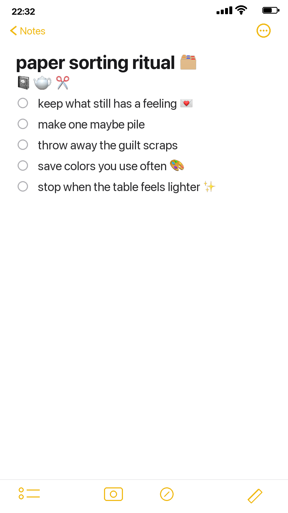

Paper clutter is not always clutter. Sometimes it is unfinished memory. The trick is learning which scraps still feel alive and which ones are only making noise.

Make three piles
Keep, maybe, and let go. Do not make more categories than that. Too many categories turn sorting into avoidance.
Keep the scraps with feeling
A receipt, label, envelope, or ribbon is worth saving if it still gives you a tiny pause.
Let the guilt scraps go
You are not required to use every pretty piece of paper you have ever saved. The journal should feel lighter after sorting.